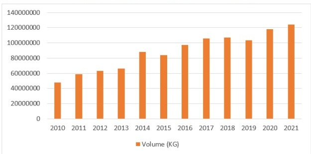

Analisis Faktor yang Mempengaruhi Ekonomi Indonesia terhadap Ekspor Udang ke Amerika Serikat tahun 2010-2021
Metode Penelitian Politeknik APP Jakarta
Author
ALANA SAVIRA
Published
January 20, 2023
.
1 Pendahuluan
1.1 Latar belakang
Udang merupakan salah satu komoditas sektor perikanan yang bernilai ekonomi tinggi. Jumlah ekspor udang Indonesia masih tergolong fluktuatif, namun udang tetap menjadi salah satu komoditas andalan ekspor perikanan Indonesia dengan pangsa pasar manca negara yang luas. Komoditas udang merupakan salah satu komoditas unggulan Indonesia yang paling diminati karena memiliki kandungan gizi yang tinggi, nilai ekonomi tinggi dan mempunyai peluang pasar baik di dalam maupun di luar negeri. Dibandingkan dengan komoditas utama ekspor perikanan Indonesia lainnya, seperti tuna, cakalang tongkol, dan rumput laut komoditas udang memiliki nilai ekspor (trade value) tertinggi.
Saat ini Indonesia menempati urutan ketiga sebagai negara pengekspor udang di dunia setelah Thailand dan India dan Amerika Serikat menjadi tujuan ekspor utama pada komoditas udang di Indonesia. Dibandingkan dengan negara-negara tujuan ekspor lainnya Amerika Serikat menjadi negara yang memiliki potensi yang paling tinggi dibandingkan negara-negara lainnya dalam kaitannya dengan perdagangan ekspor komoditas udang di Indonesia.
Gambar 1: Total volume ekspor udang Indonesia ke Amerika Serikat tahun 2010-2021 
sumber: comtrade (data diolah)
Berdasarkan gambar di atas diketahui bahwa ekspor komoditi udang mengalami kenaikan mulai dari tahun 2010-2014. Lalu mengalami penurunan sebesar -5,06% di tahun 2015. Lalu mengalami kenaikan lagi sampai di tahun 2018 dengan volume ekspor sebesar 107362,763 ton. Kemudian mengalami kenaikan kembali di tahun 2020-2021 sebesar 5,1% dengan volume 124220,966 ton. Kenaikan ini salah satunya disebabkakan oleh efisiensi dan peningkatan produksi dengan sistem budi daya dan revitalisasi tambak serta sertifikasi produk.
1.2 Ruang lingkup
Jenis penelitian ini adalah penelitian kuantitatif dengan mencari hubungan yang asosiatif. Sugiyono (2008: 36) menyatakan bahwa penelitian asosiatif adalah penelitian yang bersifat menanyakan hubungan antara dua variabel atau lebih. Penelitian ini menganalisa faktor yang mempengaruhi ekonomi Indonesia terhadap ekspor udang ke Jepang tahun 2010-2011
1.3 Rumusan masalah
Dapatkah ekspor udang di Indonesia ke Amerika Serikat dapat mempengaruhi pertumbuhan PDB Indonesia?
1.4 Tujuan dan manfaat penelitian
Untuk mengetahui bagaimana pengaruh ekspor udang Indonesia ke Amerika Serikat mempengaruhi PDB Indonesia
2 Studi pustaka
2.1 Pertumbuhan ekonomi
Pertumbuhan ekonomi merupakan salah satu indikator yang menandakan berhasilnya pembangunan dalam suatu perekonomian sebuah negara. Kemajuan suatu perekonomian ditentukan oleh besarnya pertumbuhan output nasional. Pertumbuhan ekonomi merupakan upaya peningkatan kapasitas produksi untuk mencapai penambahan output, yang diukur menggunakan Produk Domestik Bruto (PDB) maupun menggunakan Produk Domestik Regional Bruto (PDRB) dalam suatu wilayah. (Rahardjo, 2013)
Simon Kuznets (dalam Arsyad, 2010) menyatakan bahwa pertumbuhan ekonomi merupakan kenaikan kapasitas jangka panjang dari negara yang bersangkutan untuk menyediakan berbagai barang ekonomi kepada penduduknya. Kenaikan kapasitas tersebut dimungkinkan oleh adanya kemajuan atau penyesuaian - penyesuaian teknologi, institusional dan ideologi terhadap berbagai keadaan yang ada.
2.2 Ekspor udang
Ekspor udang dalam beberapa tahun terakhir ini semakin memantapkan posisinya sebagai penghasil devisa andalan. Dalam kelompok ekspor barang-barang hasil pertanian, ekspor udang sebagai penghasil devisa cukup besar. Pangsa ekspor udang diantara komoditi pertanian lainnya kian membesar. Pesatnya perkembangan ekspor udang tidak terlepas dari gencarnya kegiatan penanam modal dalam usaha udang tersebut pada pertengahan tahun 1980 an. Hal ini terutama disebabkan oleh meningkatnya permintaan udang Indonesia di pasar dunia, khususnya Jepang dan Amerika Serikat. Karakteristik bisnis udang mengandung banyak resiko, seperti kegagalan panen dan pengolahan pasca panen yang tidak memenuhi standard negara konsumen. Pemasaran udang Indonesia ke luar negeri meliputi banyak negara, mulai dari negara-negara jiran di Asia Tenggara, negara-negara Asia Timur, Amerika Serikat dan negara-negara Eropah. Dari berbagai banyak negara tujuan ekspor udang itu, negara Jepang dan Amerika Serikat, merupakan pasar utama. Perubahan yang terjadi di kedua negara ini akan sangat menentukan arah dan perkembangan ekspor udang Indonesia. Oleh karena itu dengan mengenali karakteristik pasar-pasar tersebut akan dapat membantu melihat arah pengembangan
3 Metode penelitian
3.1 Data
3.1.1 Pertumbuhan PDB Indonesia
Tahun
PDB Indonesia (US$)
Pertumbuhan (%)
2010
755094160363
0
2011
892969107923
18,26
2012
917869910106
2,79
2013
912524136718
-0,58
2014
890814755233
-2,38
2015
860854235065
-3,36
2016
931877364178
8,25
2017
1015618742566
8,99
2018
1042271531012
2,62
2019
1119099868265
7,37
2020
1058688935455
-5,40
2021
1186092991320
12,03
3.1.2 Nilai dan volume ekspor udang ke Amerika Serikat
Tahun
Nilai ekspor (US$)
Volume (KG)
2010
417869071
47779884
2011
565220696
58502451
2012
564442024
63046675
2013
721468287
66325779
2014
1082430642
88162233
2015
768605054
83698482
2016
919530384
97270705
2017
1144974675
105957499
2018
1030348984
107362763
2019
880379378
103106684
2020
1034256143
118184850
2021
1133901196
124220966
library(tidyverse)
-- Attaching packages --------------------------------------- tidyverse 1.3.2 --
v ggplot2 3.4.0 v purrr 1.0.0
v tibble 3.1.8 v dplyr 1.0.10
v tidyr 1.2.1 v stringr 1.5.0
v readr 2.1.3 v forcats 0.5.2
-- Conflicts ------------------------------------------ tidyverse_conflicts() --
x dplyr::filter() masks stats::filter()
x dplyr::lag() masks stats::lag()
library(readxl)dat<-read_excel('amerika.xlsx')library(ggplot2)ggplot(data=dat, aes(x=X, y=Y))+geom_point(color='pink', size=2)+labs(title="Tabel 1. Hubungan Antara Ekspor Udang ke US dan PDB Indonesia",x="PBD Indonesia",y="Nilai Ekspor Udang",caption ="Sumber: World Development Indicators, UN Comtrade") +theme_classic()
Plot Nilai Ekspor Udang Terhadap PDB Indonesia
3.2 Metode analisis
Metode analisis yang digunakan dengan mengambil data sekunder (time series) periode tahun 2010-2021. Dan jenis penelitian yang digunakan adalah penelitian deskriptif dengan pendekatan kuantitatif. Analisis kuantitatif merupakan analisis yang dilakukan dengan perhitungan angka-angka yang faktor yang mempengaruhi indeks pertumbuhan ekonomi Indonesia terhadap ekspor udang Indonesia ke Amerika Serikat. Metode yang dipilih adalah regresi univariat atau Ordinary Least Square (OLS) dengan 1 variabel independen. Penelitian ini bermaksud mencari hubungan antara pertumbuhan PDB dan nilai ekspor. Spesifikasi yang dilakukan adalah:
\[
y_{t}=\beta_0 + \beta_1 x_t+\mu_t
\] di mana \(y_t\) adalah nilai ekspor dan \(x_t\) adalah PDB Indonesia.
4 Pembahasan
4.1 Pembahasan masalah
4.1.1 Pertumbuhan PDB Indonesia tahun 2010-2021
Nilai PDB suatu negara merupakan hasil pertumbuhan ekonomi negara. Dalam menumbuhkan ekonomi untuk suatu negara, Negara bisa melakukan dalam sektor luar negeri yaitu dengan perdagangan internasional. Terlebih lagi perdagangan internasional dengan ekspor dan impornya merupakan salah satu indikator yang cukup besar untuk pertumbuhan ekonomi negara. Perkembangan pertumbuhan ekonomi Indonesia dapat dilihat pada tabel berikut:
Sumber: WDI
Berdasarkan tabel di atas, pertumbuhan PDB Indonesia tahun 2010-2021 tumbuh secara fluktuatif. Pada tahun 2010-2011 PDB Indonesia mengalami perkembangan sebesar 18,26% ekonomi pada tahun tersebut perkembang baik, pendapatan masyarakat dapat menopang konsumsi masyarakat dan tumbuh stabil. Pada tahun-tahun berikutnya sampai pada tahun 2015 PDB Indonesia terus mengalami penurunan sampai di tahun terendahnya yaitu 2015 yaitu sebesar -3,36% sejumlah USD 860.854.235.065 salah satu penyebab penurunan ini terjadi karena kebijakan pemerintah harus ada smelter, harga komoditas jatuh sehingga menyebabkan penurunan dan pilkada di 289 kabupaten kota, karena ada biaya kampanye percetakan dan menimbulkan efek ekonomi. Pada 2 tahun berikutnya tahun 2016-2017 PDB Indonesia mengalami pertumbuhan sebesar 8,99% kenaikan ini disebabkan struktur ekonomi Indonesia secara spasial Tahun 2017 didominasi oleh kelompok provinsi di Pulau Jawa dan Pulau Sumatera. Kelompok provinsi di Pulau Jawa memberikan kontribusi terbesar terhadap Produk Domestik Bruto, yakni sebesar 58,49 persen, diikuti oleh Pulau Sumatera sebesar 21,66 persen, dan Pulau Kalimantan 8,20 persen. Selanjutnya di tahun 2020 PDB Indonesia mengalami penurunan kembali sebesar -5,40% dan mengalami kenaikan kembali di tahun berikutnya yaitu sebesar 12,3%
4.1.2 Volume dan nilai ekspor udang ke Amerika Serikat tahun 2010-2021
.
sumber: comtrade
Berdasarkan tabel di atas nilai dan volume ekspor udang Indonesia menuju negara tujuan Amerika Serikat bergerak secara fluktuatif. Hal tersebut dikarenakan produksi udang tiap tahunnya masih belum stabil dan terus berubah-ubah. Seperti pada tahun 2014 nilai ekspor dan volume udang mencapai tingkat pertumbuhan tertinggi dengan nilai ekspor sebesar 50,03% dan volume sebesar 32,92% yang salah satunya disebabkan karena Kementerian Perdagangan RI memberikan mandat kepada seluruh eksportir untuk menggunakan Surat Keterangan Asal (SKA) guna tetap melakukan prosedur ekspor secara normal dan tetap mengisi form A untuk ekspor Indonesia ke Amerika Serikat. Namun tidak bertahan lama, karena beberapa bulan kemudian mengalami penurunan sebesar -28,99% untuk nilai ekspor dan -5,06 untuk volume ekspor.
Call:
lm(formula = X ~ Y, data = amerika)
Residuals:
Min 1Q Median 3Q Max
-1.543e+11 -5.615e+10 4.841e+09 3.657e+10 1.450e+11
Coefficients:
Estimate Std. Error t value Pr(>|t|)
(Intercept) 6.649e+11 9.690e+10 6.862 4.39e-05 ***
Y 3.512e+02 1.092e+02 3.215 0.00925 **
---
Signif. codes: 0 '***' 0.001 '**' 0.01 '*' 0.05 '.' 0.1 ' ' 1
Residual standard error: 8.914e+10 on 10 degrees of freedom
Multiple R-squared: 0.5083, Adjusted R-squared: 0.4591
F-statistic: 10.34 on 1 and 10 DF, p-value: 0.009248
Hasil dari regresi di atas yaitu regresi univariate yang digunakan untuk mengetahui hubungan antara variabel independen dengan variabel dependen. Variabel independen yang digunakan adalah nilai ekspor dan variabel dependen yang digunakan yaitu pertumbuhan PDB Indonesia. dari hasil di atas dapat dilihat bahwa regresi nilai ekspor berpengaruh positif terhadap pertumbuhan PDB Indonesia.
Jumlah nilai ekspor meningkat sejumlah 1% maka akan meningkatkan pertumbuhan PDB Indonesia sebesar 3.512e+02 dan jika nilai ekspor menurun 1% maka akan akan menurunkan pertumbuhan PDB Indonesia sebesar 3.512e+02.
5 Kesimpulan
Udang sebagai salah satu komoditi unggulan berpengaruh positif terhadap pertumbuhan ekonomi Indonesia. Dengan variabel independen yaitu nilai ekspor udang Indonesia ke Amerika Serikat yang menjadi faktor yang dapat mendorong naik dan turunnya variabel dependen yaitu PDB Indonesia. Maka ekspor berpengaruh dapat membantu memenuhi kebutuhan dalam negeri yang belum tercukupi.
6 Saran
Diharapkan untuk pihak importir Amerika Serikat dapat mempertahankan kerjasama dengan Indonesia dalam perdagangan internasional khususnya sektor industri perikanan. Karena variabel nilai ekspor berpengaruh terhadap pertumbuhan PDB, oleh karena itu diperlukan peningkatan promosi terhadap segmen pasar yang berpendapatan tinggi, karena semakin tinggi pendapatan tersebut maka semakin tinggi juga permintaanya.
7 Referensi
Siti Sahatul Fatimah, Sri Marwanti, & Suprapti Supardi. (2017). KINERJA EKSPOR UDANG INDONESIA DI AMERIKA SERIKAT TAHUN 2009-2017: PENDEKATAN MODEL CONSTANT MARKET SHARE (CMS). Jurnal Sosial Ekonomi Kelautan Dan Perikanan, 15(1), 57–67. http://ejournal-balitbang.kkp.go.id/index.php/sosek/article/view/7677/6846
View of PENGARUH GDP, HARGA EKSPOR, KURS DOLLAR TERHADAP VOLUME EKSPOR UDANG INDONESIA KE AMERIKA SERIKAT TAHUN 1990-2019. (2019). Unud.ac.id. https://ojs.unud.ac.id/index.php/eep/article/view/71322/38918
Kondisi, P., & Udang, P. (n.d.). I. http://repository.sb.ipb.ac.id/427/4/2-04-Samsul-pendahuluan.pdf
Badan Pusat Statistik. (2017). Bps.go.id. https://www.bps.go.id/pressrelease/2018/02/05/1519/ekonomi-indonesia-triwulan-iv-2017–tumbuh-5-19-persen.html
UN Comtrade. (2023). Un.org. https://comtradeplus.un.org/TradeFlow?Frequency=A&Flows=X&CommodityCodes=0306&Partners=842&Reporters=360&period=all&AggregateBy=none&BreakdownMode=plus
R Alwafi. (2016). ANALISIS VARIBEL YANG MEMPENGARUHI VOLUME EKSPOR UDANG INDONESIA DI AMERIKA SERIKAT. Jurnal ilmiah https://jimfeb.ub.ac.id/index.php/jimfeb/article/view/3403
View of Analisis faktor-faktor yang mempengaruhi ekspor udang Indonesia ke pasar Amerika Serikat tahun 1989 – 2018. (2018). Uii.ac.id. https://journal.uii.ac.id/JKEK/article/view/25172/13973
Single, N. (2023). INSW | Indonesia National Single Window. Official Website Indonesia National Single Window. https://insw.go.id/intr/detail-komoditas